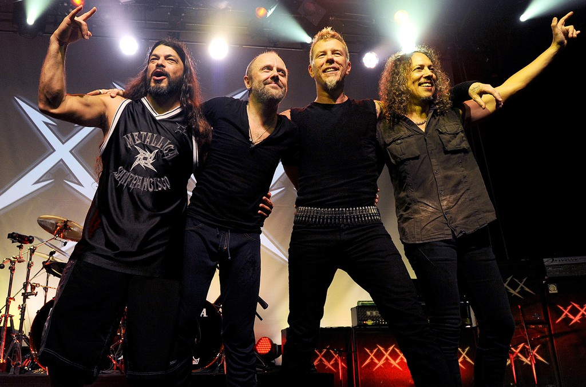
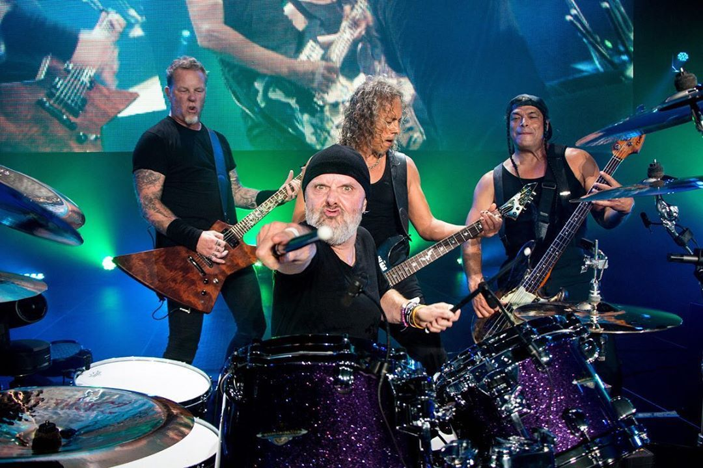
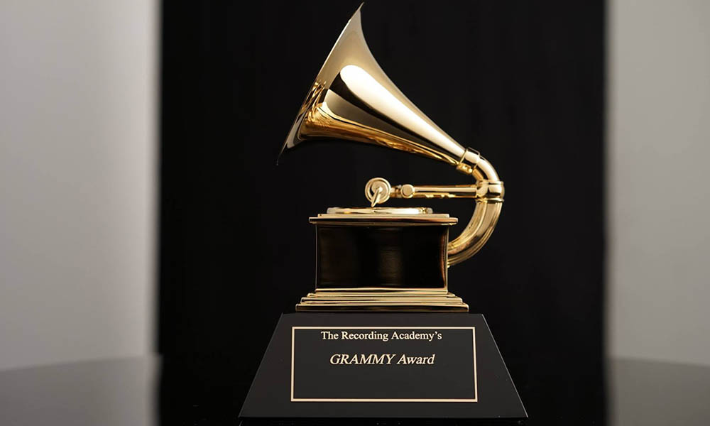

Основная информация
- Жанры:
- трэш-метал
- хеви-метал
- хард-рок
- спид-метал
- Место создания - Лос-Анджелес, США
- Язык - английский
- Лейблы - Warner Bros., Elektra, Vertigo, Megaforce, Sony (Japan)
- Состав Джеймс Хетфилд, Ларс Ульрих, Кирк Хэмметт, Роберт Трухильо
Ознакомление с группой

Metallica (читается как Мета́ллика) — американская метал-группа, образованная в 1981 году, в Лос-Анджелесе. Metallica оказала большое влияние на развитие метала и входит (вместе с такими группами как Slayer, Megadeth и Anthrax) в «большую четвёрку трэш-метала». Альбомы Metallica были проданы в общей сложности в количестве более 110 миллионов экземпляров по всему миру, что делает её одним из самых коммерчески успешных металлических коллективов. В 2011 году один из крупнейших журналов о метал-музыке Kerrang! в июньском номере признал Metallica лучшей метал-группой последних 30 лет.Группа получила сторонников в среде поклонников андеграундной музыки и одобрительные отзывы критиков, выпустив третий студийный альбом Master of Puppets (1986), который сейчас считается «классикой трэш-метала» и который существенно повлиял на дальнейшее развитие этого жанра. Коммерческий успех пришёл после выпуска пятого альбома The Black Album или «Metallica», который дебютировал на первой строчке чарта Billboard 200. В 2000 году Metallica были в числе музыкальных исполнителей, подавших иск против Napster, в связи с бесплатным распространением материалов, защищённых авторским правом, без разрешения авторов. В результате, была достигнута договорённость, по которой Napster стал платным сервисом. Несмотря на первое место в Billboard 200, альбом St. Anger (2003) из-за отсутствия гитарных соло, «стального звучания» малого барабана и сырости звучания разочаровал многих фанатов группы. В фильме Some Kind of Monster показан процесс создания St. Anger и отношения между участниками группы в течение этого времени. В 2009 году Metallica была введена в Зал славы рок-н-ролла. В 2012 году Metallica основали независимый лейбл Blackened Recordings и выкупили права на все свои студийные альбомы и видео. В 2019 году группа вошла в список самых высокооплачиваемых музыкантов по версии журнала Forbes. Заработанная сумма составила $68,5 млн, это десятое место в рейтинге.
Стиль и лирические темы

Звучание Metallica было описано как хеви-метал, треш-метал, хард-рок и спид-метал. Стиль группы формировался под влиянием ранних хеви-метал и хард-рок групп и исполнителей, таких как Black Sabbath, Deep Purple, Led Zeppelin, Ted Nugent, Queen, Rush, Aerosmith, и Scorpions, групп новой волны британского хеви-метала, таких как Venom, Motörhead, Diamond Head, Judas Priest, и Iron Maiden и ранних панк-рок-групп, таких как Ramones и The Misfits, а также пост-панк-группы Killing Joke и хардкор-панк-групп Discharge и Suicidal Tendencies. Хью чувствовал, что Metallica расширила свою композиционную технику и диапазон выражения, чтобы взять более агрессивный подход в следующих релизах, и лирика имела дело с более личными и социально сознательными проблемами. Лирические темы, исследуемые на Master of Puppets, включали религию и войну, гнев, безумие, монстров и наркотики.В 1991 году, с новым продюсером Бобом Роком, Хью отметил, что Metallica упростила и рационализировала свою музыку для более коммерческого подхода, чтобы обратиться к широкой аудитории. «Группа отказалась от своего агрессивного, быстрого темпа, чтобы расширить свою музыку и выразить тесситуру», — заявил Роберт Палмер из Rolling Stone. Изменение направления оказалось коммерчески успешным, поскольку Metallica был первым альбомом группы, который достиг первой позиции в Billboard 200. Metallica заметили изменения рок-сцены, созданной гранж-движением начала 1990-х. В Load группа сосредоточилась на не-металлических влияниях и изменила музыкальное направление. Уходя от лирических тем, имеющих дело с наркотиками и монстрами, новый лирический подход Metallica сосредоточился на гневе, потере и возмездии.St. Anger ознаменовался большими изменениями в звучании группы. Гитарные соло были исключены из альбома, оставив «сырой и необработанный звук». Лирика альбома связана с реабилитацией Хетфилда, в том числе ссылки на дьявола, антинаркотические темы, клаустрофобия, обречённость и религиозное лицемерие.
Факты
Metallica появилась в эпизоде анимационного сериала «Симпсоны» «The Mook, the Chef, the Wife and Her Homer». Эпизод с участием металлистов записывался в сентябре 2005 года, именно с него начался 18-й сезон мульт-эпопеи. 10 сентября состоялся премьерный показ этой серии, где группа исполняла песню «Master of Puppets».Также группа появилась в 4 серии 2 сезона научно-популярного сериала Искривление времени (англ.)рус.Музыка Metallica использовалась для пыток заключённых в американской тюрьме в Гуантанамо. Узнав об этом, Хетфилд пошутил: «Мы мучили своих родителей и жён нашей музыкой много лет. Почему бы не помучить ею иракцев?»
Дискография
- Kill 'em All (1983)
- Ride the Lightning (1984)
- Master of Puppets (1986)
- …And Justice for All (1988)
- Metallica (The Black Album) (1991)
- Load (1996)
- Reload (1997)
- St. Anger (2003)
- Death Magnetic (2008)
- Hardwired...To Self-Destruct (2016)
Награды

-
Гремми:
- 1990: Лучшее метал-исполнение — «One»
- 1991: Лучшее метал-исполнение — «Stone Cold Crazy»
- 1992: Лучшее метал-исполнение — Metallica
- 1999: Лучшее метал-исполнение — «Better than You»
- 2000: Лучшее исполнение в стиле хард-рок — «Whiskey in the Jar»
- 2001: Лучшее инструментальное рок-исполнение — «The Call of Ktulu»
- 2004: Лучшее метал-исполнение — «St. Anger»
- 2009: Лучшее метал-исполнение — «My Apocalypse»
- MTV Video Music Awards:
- 1992: Лучшее метал видео — «Enter Sandman»
- 1996: Лучшее метал видео — «Until It Sleeps»
- American Music Awards:
- 1996: Любимый исполнитель: хеви-метал/хард-рок: Metallica — Load
- 1996: Любимая металл/хард-рок песня — «Until It Sleeps»